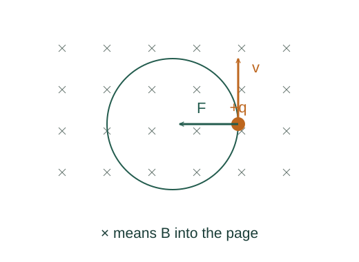

Derive a charged particle’s magnetic orbit radius
Magnetic force bends velocity without doing work on a point charge. In a uniform magnetic field the perpendicular part of motion is circular, while any parallel component continues unchanged.
What the symbols mean
q: particle charge; m: mass; B: field magnitude; v⊥: velocity component perpendicular to the field; ωc: cyclotron angular frequency.
When this applies
Uniform time-independent magnetic field, no electric field or other significant forces, nonrelativistic particle.
Developing the argument

State the magnetic part of the Lorentz force
The cross product gives a force perpendicular to both velocity and field. Its magnitude uses only v⊥.
Check the work rate
The force is perpendicular to the full velocity, so its dot product with velocity vanishes. The speed and kinetic energy stay constant.
A closer lookWhy is power force dotted with velocity? ↗Derive the work–kinetic energy theoremSupply centripetal acceleration
In the plane normal to the field, magnetic force provides the inward force for circular motion. Equate magnitudes.
A closer lookDerive the required inward acceleration ↗Why circular acceleration is v²/rSolve radius and frequency
Cancel one v⊥ to find r. The angular frequency v⊥/r then loses its speed dependence in the nonrelativistic model.
A worked example
A proton with v⊥ = 10⁶ m/s in B = 0.10 T has radius about 0.104 m. Adding a parallel velocity changes the path into a helix.
Derivation behind this calculation ↗A point to keep straight
The sign of charge changes the turning direction. At relativistic speeds use relativistic momentum: r = p⊥/(|q|B).
Check the assumptions and derivation ↗